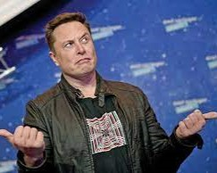

Elon Musk : Visionnaire de l'avenir

Découvrez l'un des esprits les plus audacieux
et innovants de notre époque, Elon Musk. Entrepreneur
visionnaire, ingénieur de renom et inventeur passionné,
Elon Musk est le moteur derrière certaines des avancées
technologiques les plus révolutionnaires du 21e siècle.
Sa quête inlassable de repousser les limites de la science
et de l'exploration spatiale a transformé notre compréhension
du possible. Sur cette page, plongez dans l'univers fascinant
de cet homme extraordinaire et explorez son impact sur
l'industrie automobile, l'exploration spatiale, les énergies
renouvelables et bien plus encore. Accrochez-vous, car vous
êtes sur le point de plonger dans le monde d'Elon Musk, où
l'avenir est toujours en construction.
L'Influence Volatile d'Elon Musk sur le Bitcoin : Une Montée et Une Chute en Deux Tweets

Un fait réel lié à Elon Musk et au Bitcoin est survenu en février 2021
lorsque Tesla, la société
d'Elon Musk, a annoncé qu'elle accepterait les paiements en Bitcoin pour l'achat de ses véhicules.
Cette annonce a été largement médiatisée et a provoqué une augmentation significative du prix du
Bitcoin à l'époque.
Cependant, quelques mois plus tard, en mai 2021, Elon Musk a tweeté que
Tesla suspendait
l'acceptation du Bitcoin en raison de préoccupations environnementales liées à l'exploitation
minière de la cryptomonnaie. Cette déclaration a fait chuter le prix du Bitcoin de manière
significative en l'espace de quelques heures.
Ce fait réel illustre l'impact direct d'Elon Musk en tant que personnalité
influente sur
le marché du Bitcoin. Ses commentaires publics ont eu un effet immédiat sur la valeur de
cette cryptomonnaie, démontrant à quel point l'influence des personnalités publiques peut
être puissante dans le monde des cryptomonnaies.